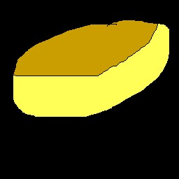

栗まんじゅうの総重量： 50グラム
栗まんじゅうの総体積： 50㎥
栗まんじゅうを球にした時の表面積： 50㎡
栗まんじゅうを球にした時の半径： 50m
|  | ← | |
| 1 | 1 | |
| ×2 | ||
| 300/300 |
ドラえもんのひみつ道具「バイバイン」で栗まんじゅうを増やしたときの数を計算するシミュレーター
-1x、+1xボタンで、増殖倍率の変更(初期値：2倍)
-1s、+1sボタンで、増殖までの時間を変更(初期値：300秒=5分)
バイバインにバイバインを塗ることもできる (今のところ最大5個でテスト)
バイバインの個数だけ増殖を実行する(2倍の効果のバイバインが8個なら2^8=256倍)
一応、ここで使っているJavaScriptは、巨大数であるクヌースの矢印表記(10↑↑n nはJavaScriptで扱える値)まで表せるようになっている
数が大きくなると、どの単位でも値がほぼほぼ等しくなる。
栗まんじゅうの重さは1個50g、0.06㎥で計算
※栗まんじゅうの個数計算をする際の物理法則は無視(ブラックホールなど)
重さの単位は、放置ゲーム「Incremental Mass Rewritten」を参考にした
1キログラム=1000グラム
1トン=1000キログラム
1エベレスト=1.61914トン
1地球=36,886,967エベレスト
1太陽=333,054地球
1天の川銀河=1.512太陽
1宇宙=50,276,520,864天の川銀河
1マルチバース=10109宇宙
1ギガバース=10109マルチバース
多次元宇宙^n=10109多次元宇宙^(n-1)
...
サイト内では、10Xを1eX、1010Xを1e1eX(eeX)のように表す
オフラインでは進行しません
※阿僧祇は、塵劫記と八十華厳で1回ずつ(計2回)出る
※矜羯羅以降は、前の単位の2乗の数になる。(1阿伽羅=10112矜羯羅 1摩婆羅=10224阿伽羅...)